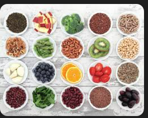

Basic Nutrition Guidelines
Good nutrition supports your workouts, recovery, and overall well-being. You don’t need a perfect diet—just consistent small improvements.


- Include a source of protein at most meals (beans, lentils, eggs, yogurt, chicken, fish, tofu).
- Choose whole grains when possible (brown rice, whole wheat bread, oats).
- Eat fruits and vegetables daily for vitamins, minerals, and fiber.
- Drink water regularly throughout the day, especially around workouts.
- Limit sugary drinks and highly processed snacks.
For general healthy eating information, visit: MyPlate.